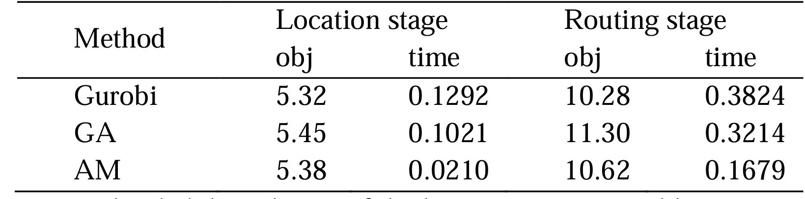

摘要
选址-路径问题（Location-Routing Problem，LRP）在应急医疗设施选址优化中具有广泛应用。选址-路径问题是一个复杂的空间优化问题，即从一组需求点和候选设施位置中选择最佳设施位置并规划高效路线。本研究提出了一种基于深度强化学习的两阶段方法，充分发挥了深度强化学习在处理顺序决策问题方面潜力。首先，在选址优化阶段，通过智能体与环境之间的交互，智能体需要从众多需求点中选择设施位置，以最大化总体利润或最小化总体成本，该阶段确定中心点并将需求点分配到最近的设施位置。随后，在路径规划阶段，代理决定如何在预先选择的设施位置之间分配交货，以最大限度地减少总体路线长度或成本。实验结果表明该方法在解决选址-路径问题的有效性。该方法可为应对应急事件提供重要的方法支持，辅助决策者对设施位置和路线规划做出优化选择，进而提高服务响应速度和效率。此外，该方法在可持续城市发展领域具有广泛的应用潜力，有助于推动深度强化学习在空间优化问题中的发展。
选址路径问题简介
选址路径问题（LRP）综合考虑了设施选址问题（FLP）和路径规划问题（VRP），Watson-Gandy 和 Dohrn 、Salhi, S. 和 Rand, G. K. 已经证明通过将 LRP 分解为 FLP 和 VRP 并依次解决这些问题来解决 LRP 策略并非最优。因此，构建将FLP和VRP作为一个整体同时求解的求解策略以找到最优解是LRP处理的关键。
LRP 作为一个传统的运筹规划问题，考虑一组潜在设施和一组客户。 LRP的主要决定条件包括：
• 开放设施的数量和位置，
• 已开放设施的客户分配，
• 设计使用车队为每个设施的客户提供服务的路线。
与大多数其他优化模型一样，我们无法用一个数学模型来描述现实生活中 LRP 复杂模型的所有方面。考虑到复杂的现实场景，LRP 存在许多具有不同目标和约束的变体问题。因此，确定每个子问题的约束条件，例如设施位置、分配和路径问题，对于解决 LRP 至关重要。

图 1：LRP 简单示例
研究方法
在选址路径问题（LRP）中，有两个主要问题需要解决：设施选址问题和路径规划，这两个问题都可以建模为顺序决策过程。
在本节中，我们提出了一种基于深度强化学习（DRL）的两阶段算法来解决应急设施选址路径规划问题，包括设施选址问题阶段和路径规划阶段。在选址问题和路径问题中，节点分为三类：需求点、物流中心和配送中心。
（1）选址问题阶段
在设施选址选择阶段，我们将问题建模为马尔可夫决策过程（MDP）。智能代理需要从所有需求点中选择一个或多个位置来建设设施，旨在最大化总收入或最小化总成本。为实现这一目标，我们遵循以下步骤：
• 状态：定义状态表示，其中包括当前选择的设施位置、需求点状态以及其他相关信息；
• 动作：定义一个动作空间，代理可在其中选择构建设施的位置；
• 奖励：设计奖励函数，以便代理可根据所选位置接收适当的奖励信号。奖励可以考虑成本、收入和需求满足程度等因素。
综上，设施的部署随选址阶段的完成，选址点被遴选为视为中心点，每个需求点分配给最近的设施点。
（2）路径规划阶段
在路径规划阶段，路径问题也可建模为马尔可夫决策过程。在此阶段，智能代理需要决定如何在选定的设施位置之间分配递送，以最大限度地减少总体路径长度或成本。
两阶段算法的求解框架如下图2所示：
图2：应急医疗设施选址-路径问题的两阶段算法结构
应急医疗设施选址-路径问题解决方式主要分两步，即实现需求点与设施点的多对一分配，以及分配后的路径规划问题。首先需要将需求点以及备选设施点的位置信息等进行存入，结合选址-路径模型进行分析。第一步是将属性信息导入到AM-FLP（Attention Model- Facility Location Problem）模型中，从众多备选设施点中选出位于众多需求点中心的点位作为设施点，接着将众多需求点分配给所选设施点。第二步是将所选设施点以及对应需求点的分配结果输入到AM-VRP（Attention Model - Vehicle Routing Problem）模型中，以各设施点为重心，对途径各需求点的路径进行规划，最后输出符合需求的设施点信息以及路径。
（3）深度强化学习算法
我们采用深度强化学习算法来训练我们的AM-FLP和AM-VRP，该算法是一种梯度策略方法，其算法步骤如下：
• 定义一个策略函数π(a|s) ，用来描述给定状态s下采取动作a的概率分布，本文用π_FLP (a|s)和π_VRP (a|s)分别表示AM-FLP网络和AM-VRP网络
• 通过策略函数，从环境中采样多个轨迹，并记录每个轨迹中的状态、动作，以及对应的奖励函数（目标函数是距离最小化或成本最小化，这里取目标函数的相反数）
• 对于每一个轨迹，计算累积回报。回报表示了在一次尝试中执行该策略的质量
• 根据计算得到的梯度信息，使用梯度下降法，更新策略函数的参数，以使期望回报增加
• 不断重复上述步骤，直到策略函数收敛到一个满足要求的策略，或者达到预定义的训练迭代次数。
实验与分析
深度强化学习通过智能体与其环境之间的持续交互来最大化回报，可有效地处理顺序决策问题。本文提出了一种基于深度强化学习的两阶段选址-路径问题的新方法。在本节中，我们首先讨论如何利用深度强化学习来解决LRP，然后使用该框架实现问题解决，最后进行泛化实验。
对于LRP，我们构建了两种不同的注意力模型AM-FLP和AM-VRP，分别用于解决选址问题和路径问题。我们随机生成 2000 个实例来评估结果。每个示例由50个需求点组成，任务是从50个需求点中选择8个点作为中心点。然后，按照贪心方法，将剩余的需求点分配给最近的中心点，从而将所有节点分为 8 类。最后，对于每个类别，选择最短路径来遍历所有节点。实验结果如表1所示。N表示需求点的数量，p表示中心的数量。
表1 Gurobi vs. GA vs. AM在N=50, p=8上的位置路由问题的比较结果
我们将应急设施选址-路径问题的解决分为两个阶段。表1从应急设施选址阶段和路径规划阶段的目标函数和求解时间方面说明了三种不同的方法。作为公认的最佳解决方案，求解器Gurobi在这个问题上表现得出色。即使在50个节点的情况下，它也能始终快速地获得最优解。另一方面，遗传算法（GA）作为一种启发式算法，与其他两种算法相比，其结果相对较差，基于GA算法结果的目标值与最优解之间的差距最大，这可能归因于遗传算法中的参数设置。本文提出采用深度强化学习(AM) 方法求解应急设施选址路径问题，与遗传算法相比，与最优解的差距更小。此外，本文方法也是三种方法中算法求解时间最短。研究结果表明本文提出的方法在某种程度上实现了求解时间和准确性的平衡，使其成为一种应用潜力的创新方法。本文提出的方法可为解决应急设施选址-路径问题中解决时间和精度之间的权衡做出方法支撑。本文研究相关的源代码和案例详细描述可参考https://github.com/HIGISX/hispot。
结论及展望
选址-路径问题在应急设施配置优化应用中具有重要意义。它直接影响应急设施的资源配置、物流效率和服务质量。这项研究引入了一种创新的解决方案—基于深度强化学习的两阶段方法—来解决选址路径问题，特别是针对应急医疗设施选址路径优化。该方法充分利用了深度强化学习在解决顺序决策问题方面的潜力，通过智能体与环境的交互，有效优化紧急医疗设施选址优化和路径规划，有效提升LRP模型求解整体效率和结果。本文研究为应急医疗设施优化配置提供了一种新的、有效的方法，为实际应用带来了支撑，并为应对应急情况和自然灾害应急应对提供了有力支持和决策工具。未来研究将进一步探索该方法模型的泛化能力、挖掘空间特征在空间优化复杂问题求解解耦的潜力及其在其他领域的应用，从而扩展其实用价值。